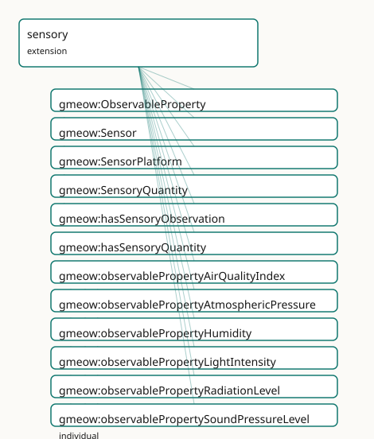

GMEOW Sensory Module
- IRI: https://blackcatinformatics.ca/gmeow/slices/sensory
- Tier: extension
Group: extensions
What This Slice Covers
This slice owns 17 terms and contributes 23 mapping or projection rows. Use it when its terms match the native fact you want to preserve; use the linkage tables to see how those facts leave GMEOW for consumer vocabularies.
Dependencies
Consumers
- Sensory perception observations (the unified stance applied to senses).
Local Map

Terms
Classes
| Term | Label | Definition |
|---|---|---|
gmeow:ObservableProperty |
Observable Property | A physical, chemical, biological, or environmental property that can be observed or measured by a sensor. A value vocabulary (individuals, never subclasses) so... |
gmeow:Sensor |
Sensor | An agent that produces observations by responding to a stimulus — a physical device, a software process, or a biological perceiver. The observer in a sensory o... |
gmeow:SensorPlatform |
Sensor Platform | A physical entity that hosts one or more sensors — a weather station, a satellite, a buoy, a drone, a vehicle, or a building-mounted instrument. The platform i... |
gmeow:SensoryQuantity |
Sensory Quantity | The scalar numeric result of a sensory observation — a value with unit, determinacy, and granularity. Equivalent to gmeow:ScalarQuantity (following the ali... |
Properties
| Term | Label | Definition |
|---|---|---|
gmeow:hasSensoryObservation |
has sensory observation | Links an entity to a sensory observation that measured one of its properties. Non-functional: multiple sensors may observe the same property of the same entity... |
gmeow:hasSensoryQuantity |
has sensory quantity | Flat shortcut linking an entity to the scalar quantity result of a sensory observation of its property. Derived via property chain from the reified observation... |
gmeow:platformLocation |
platform location | The geographic place where a sensor platform is situated. A platform typically has one location at a time; historical locations are modelled as past SensoryObs... |
gmeow:sensoryObservationOf |
sensory observation of | The entity whose property is being observed — the observedFeature of a sensory observation. Subproperty of gmeow:observedFeature so generic consumers can query... |
gmeow:sensoryProperty |
sensory property | The observable property that a sensory observation measures — temperature, humidity, light intensity, etc. Distinct from gmeow:observationMethod (the procedure... |
gmeow:sensoryResult |
sensory result | The scalar quantity result of a sensory observation — a value with unit, determinacy, and granularity. Subproperty of gmeow:observationResult so generic consum... |
Individuals
| Term | Label | Definition |
|---|---|---|
gmeow:observablePropertyAirQualityIndex |
air quality index | The air quality index observable property — a physical or environmental quantity that can be measured by a sensor. |
gmeow:observablePropertyAtmosphericPressure |
atmospheric pressure | The atmospheric pressure observable property — a physical or environmental quantity that can be measured by a sensor. |
gmeow:observablePropertyHumidity |
humidity | The humidity observable property — a physical or environmental quantity that can be measured by a sensor. |
gmeow:observablePropertyLightIntensity |
light intensity | The light intensity observable property — a physical or environmental quantity that can be measured by a sensor. |
gmeow:observablePropertyRadiationLevel |
radiation level | The radiation level observable property — a physical or environmental quantity that can be measured by a sensor. |
gmeow:observablePropertySoundPressureLevel |
sound pressure level | The sound pressure level observable property — a physical or environmental quantity that can be measured by a sensor. |
gmeow:observablePropertyTemperature |
temperature | The temperature observable property — a physical or environmental quantity that can be measured by a sensor. |
Linkages
- Rows: 23
- Projection profiles:
ivoa,loinc,sosa - External vocabularies:
geo,loinc,obi,oboe,obscore,pato,sosa
| Source | Kind | Profile | Predicate/Relation | Target | Evidence |
|---|---|---|---|---|---|
gmeow:ObservableProperty |
equivalence | - |
skos:relatedMatch | loinc:Component | gmeow-observations.sssom.tsv; gmeow:eqObs073; confidence 0.75 |
gmeow:ObservableProperty |
equivalence | - |
skos:closeMatch | oboe:Characteristic | gmeow-observations.sssom.tsv; gmeow:eqObs048; confidence 0.8 |
gmeow:ObservableProperty |
equivalence | - |
skos:closeMatch | pato:0000001 | gmeow-observations.sssom.tsv; gmeow:eqObs051; confidence 0.75 |
gmeow:ObservableProperty |
equivalence | - |
skos:closeMatch | sosa:ObservableProperty | gmeow-observations.sssom.tsv; gmeow:eqObs044; confidence 0.9 |
gmeow:Sensor |
equivalence | - |
skos:closeMatch | obi:0000968 | gmeow-observations.sssom.tsv; gmeow:eqObs052; confidence 0.8 |
gmeow:Sensor |
equivalence | - |
skos:relatedMatch | obscore:facility | gmeow-observations.sssom.tsv; gmeow:eqObs065; confidence 0.75 |
gmeow:Sensor |
equivalence | - |
skos:relatedMatch | obscore:instrument | gmeow-observations.sssom.tsv; gmeow:eqObs066; confidence 0.75 |
gmeow:Sensor |
equivalence | - |
skos:closeMatch | sosa:Sensor | gmeow-observations.sssom.tsv; gmeow:eqObs042; confidence 0.9 |
gmeow:SensorPlatform |
equivalence | - |
skos:closeMatch | sosa:Platform | gmeow-observations.sssom.tsv; gmeow:eqObs043; confidence 0.85 |
gmeow:SensoryQuantity |
equivalence | - |
skos:closeMatch | sosa:Result | gmeow-observations.sssom.tsv; gmeow:eqObs045; confidence 0.85 |
gmeow:platformLocation |
equivalence | - |
skos:closeMatch | geo:location | gmeow-observations.sssom.tsv; gmeow:eqObs047; confidence 0.8 |
gmeow:sensoryProperty |
equivalence | - |
skos:closeMatch | sosa:observedProperty | gmeow-observations.sssom.tsv; gmeow:eqObs046; confidence 0.9 |
gmeow:ObservableProperty |
projection | loinc |
projects to / <= | loinc:Component | gmeow:mapLoincComponent; confidence 0.75; lossy: the GMEOW observable-property profile is flattened to a LOINC component |
gmeow:ObservableProperty |
projection | sosa |
projects to / <= | sosa:ObservableProperty | gmeow:mapSosaObservableProperty; lossy: the value-vocabulary individual identity and any external QID alignment are dropped; only the generic sosa:ObservableProperty class survives |
gmeow:Sensor |
projection | ivoa |
projects to / <= | obscore:facility | gmeow:mapIvoaFacility; confidence 0.75; lossy: the telescope/facility node is preserved, but agent roles and platform location are dropped |
gmeow:Sensor |
projection | ivoa |
projects to / <= | obscore:instrument | gmeow:mapIvoaInstrument; confidence 0.75; lossy: the instrument node is preserved, but agent roles and platform location are dropped |
gmeow:Sensor |
projection | sosa |
projects to / <= | sosa:Sensor | gmeow:mapSosaSensor; lossy: the agent-specific properties (name, description, web page, role) and the platform-location context are dropped; only the generic sosa:Sensor class survives |
gmeow:Sensor |
projection | sosa |
projects to / <= | sosa:madeBySensor | gmeow:mapSosaMadeBySensor; confidence 0.85; lossy: only vantage instances that are typed as Sensor are projected to sosa:madeBySensor; other vantage types (person, organization, software agent) are dropped in the SOSA profile. Non-displayable observations are suppressed. |
gmeow:SensorPlatform |
projection | sosa |
projects to / <= | sosa:Platform | gmeow:mapSosaSensorPlatform; lossy: the platform-specific properties (platformLocation) and any hosted-sensor structure are dropped; only the generic sosa:Platform class survives |
gmeow:platformLocation |
projection | sosa |
projects to / <= | geo:location | gmeow:mapSosaPlatformLocation; confidence 0.8; lossy: SOSA core has no direct platform-location property; bridge via GeoSPARQL geo:location by reference. The place's coordinates, geometry, and granularity are projected separately via the GeoSPARQL projection. |
gmeow:sensoryObservationOf |
projection | sosa |
projects to / <= | sosa:hasFeatureOfInterest | gmeow:mapSosaFeatureOfInterest; confidence 0.85; lossy: the subproperty distinction (sensoryObservationOf vs spatialMeasurementOf vs generic observedFeature) collapses to flat sosa:hasFeatureOfInterest. Non-displayable observations are suppressed. |
gmeow:sensoryProperty |
projection | sosa |
projects to / = | sosa:observedProperty | gmeow:mapSosaObservedProperty; confidence 0.9; lossy: the GMEOW value-vocabulary individual identity is preserved as the object node, but any QID alignment or external classification on the ObservableProperty is dropped if not re-typed |
gmeow:sensoryResult |
projection | sosa |
projects to / <= | sosa:hasResult | gmeow:mapSosaSensoryResult; confidence 0.85; lossy: the unit, determinacy, granularity, reference frame, and standpoint on the result are dropped; only the scalar value node survives. Non-displayable/superseded observations are suppressed. |
Guide
Sensory — sensors, platforms, and the observation stack applied to senses
Slice:
https://blackcatinformatics.ca/gmeow/slices/sensory· tier: extension A thermometer, a smartphone, and a nose are all observers; their readings are all claims.
GMEOW does not have one model for instrument data and another for perception. This slice
deepens the SensoryObservation stub from the observations slice into a full sensor
stack, and in doing so applies the unified claim stance to the senses themselves: every
reading is an observation from a vantage (Principle 11 — values are
perceiver-relative; the vantage may be a device, a person, or an organization), and
multiple sensors observing the same property of the same entity produce co-equal
readings that coexist without collapse (Principle 9 — no sensor is "the primary
observer"). The Principle-15 consumer is exactly that: sensory perception observations —
the unified stance applied to senses. SOSA/SSN is bridged by reference, never imported
(Principle 5): Sensor ↔ sosa:Sensor, SensorPlatform ↔ sosa:Platform,
ObservableProperty ↔ sosa:ObservableProperty.
The observers
gmeow:Sensor
An agent that produces observations by responding to a stimulus — a physical device, a
software process, or a biological perceiver. A gufo:RoleMixin under gmeow:Agent: being
a sensor is a role, not an essence. The vantage of a SensoryObservation may be a Sensor,
a person, or an organization; none is privileged (Principle 9).
gmeow:SensorPlatform
The physical carrier of sensors — a weather station, satellite, buoy, drone, or vehicle.
Deliberately distinct from both the Sensor (the observing agent it hosts) and the Place
(where it sits, via gmeow:platformLocation). Historical locations are modelled as past
observations or location states, never by mutating platformLocation (Principle 9).
What is measured
gmeow:ObservableProperty
The open value vocabulary (Principle 9 — individuals, never subclasses) of measurable properties: temperature, humidity, light intensity, sound pressure level, atmospheric pressure, air quality index, radiation level, and whatever comes next — a new property is data, not a schema change.
gmeow:SensoryQuantity
The scalar result of a sensory observation — value × unit × determinacy × granularity.
Declared owl:equivalentClass gmeow:ScalarQuantity following the alias
precedent: the same construct under its domain-specific name, so the sensor stack reads
naturally without forking the quantity facility.
The observation itself
gmeow:sensoryProperty
Names the ObservableProperty a SensoryObservation measures. Distinct from
observationMethod (the procedure); one property per observation — multiple properties
mean multiple observations (Principle 9). EL-axiomatised: every SensoryObservation
mediates a vantage, an observed feature, a property, and a result.
gmeow:sensoryObservationOf
The entity whose property is being observed — a subproperty of gmeow:observedFeature,
so generic consumers query all observations without knowing the domain. Its inverse,
gmeow:hasSensoryObservation, is non-functional by doctrine: competing readings coexist.
gmeow:sensoryResult
The scalar outcome, a subproperty of gmeow:observationResult ranging over
SensoryQuantity. The reference frame is carried on the observation via
gmeow:hasReferenceFrame and propagates to the result through the existing
isResultOf ∘ hasReferenceFrame chain — frame inheritance is axiomatic, not convention.
gmeow:hasSensoryQuantity
The flat shortcut from entity straight to quantity, derived by property chain:
gmeow:hasSensoryQuantity owl:propertyChainAxiom
( gmeow:hasSensoryObservation gmeow:sensoryResult ) .
The chain keeps the property non-simple, so it is excluded from all cardinality axioms (OWL 2 DL regularity preserved). Assert the reified path; the shortcut materialises.
Solver layer & alignment
Unit conversion, sensor calibration, aggregation, and time-series analytics are
solver-layer concerns (Principle 12) — the graph records readings and their frames, never
recomputed derivatives. Alignment to SOSA/SSN remains by reference (Principle 5); the
pre-existing gmeow:Agent → sosa:Sensor broadMatch becomes precise here, with
gmeow:Sensor as the exact counterpart. Depends on kernel, observations (the claim
stack and SensoryObservation stub it deepens), and places (platform locations). The
sensory-environment slice consumes this stack for ambient Location×time conditions.